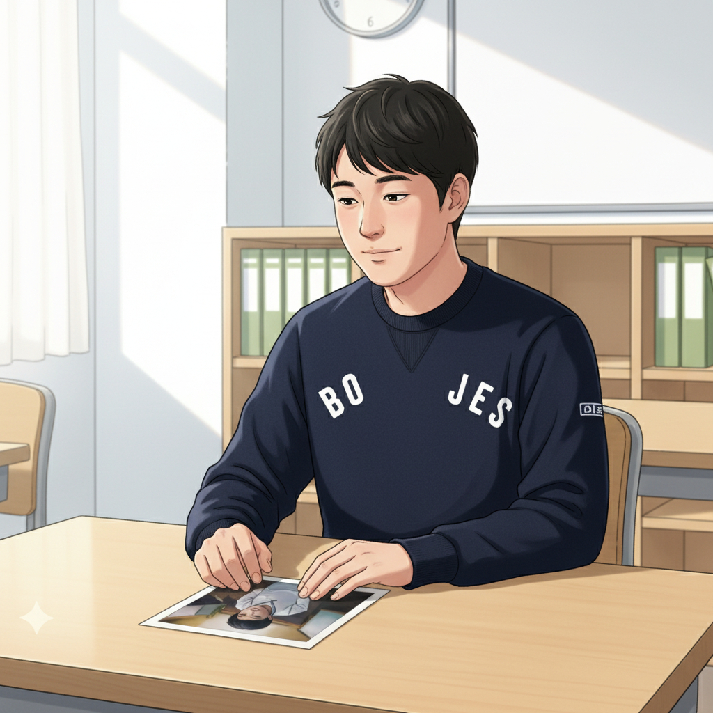
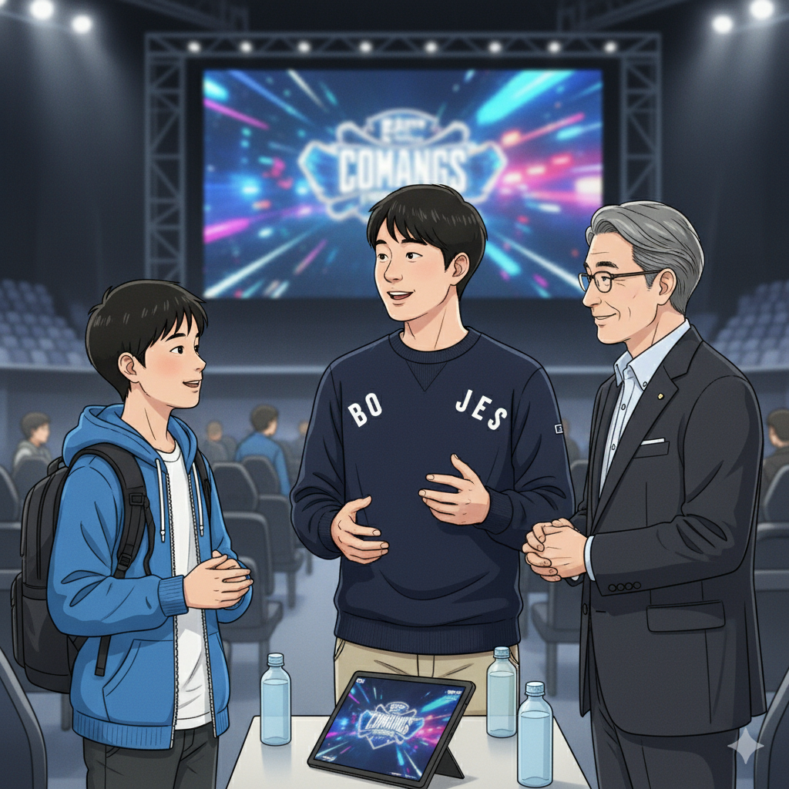
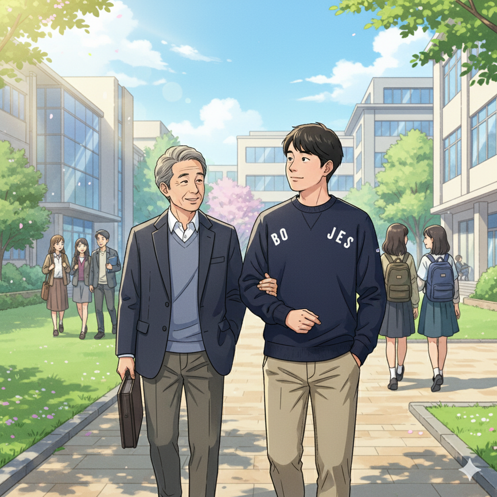
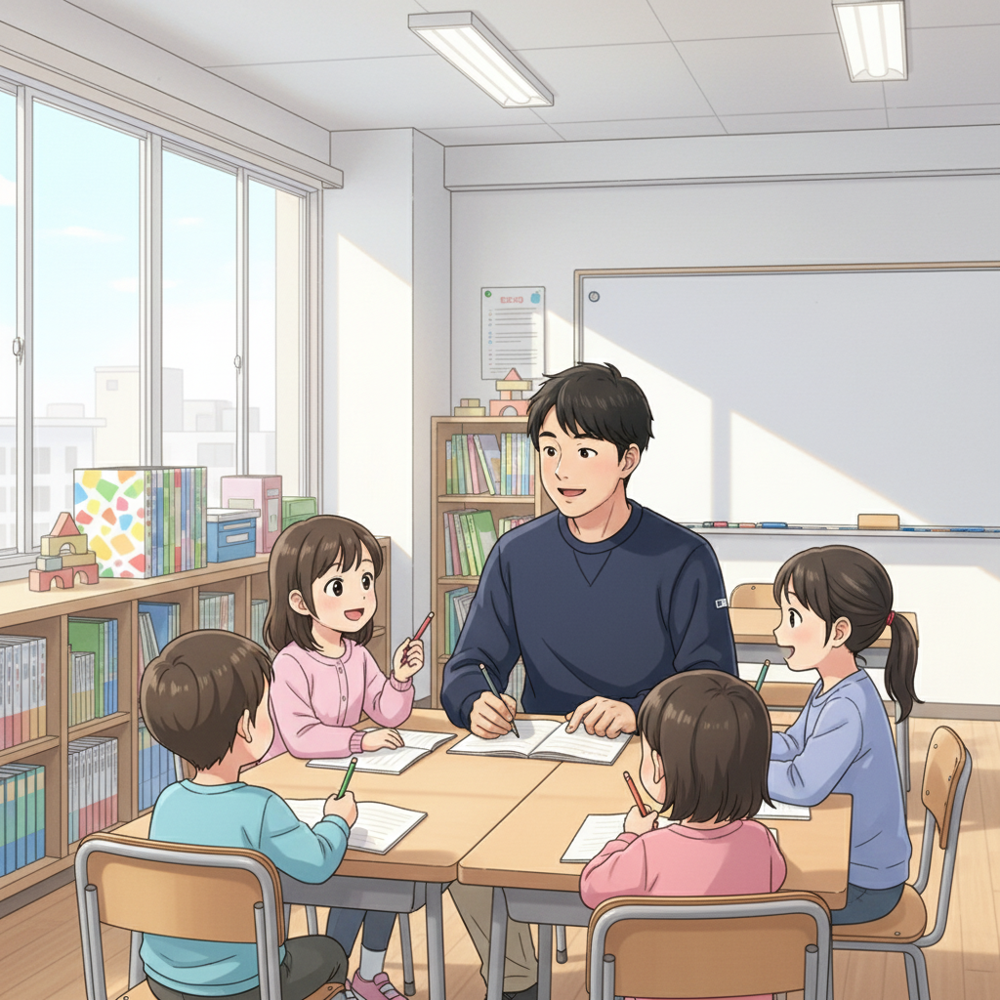

どん底からのスタート：特別支援学級での日々（塾長）

こんにちは、if塾塾長の山﨑です。僕にはADHDとASDの診断があります。小中学校時代は、授業に集中できず、忘れ物も多くて、周りの子と同じようにできない自分に自信をなくしていました。特に中学時代は、ほとんどの時間を特別支援学級で過ごしました。当時は、将来のことなんて考えられず、ただ毎日を乗り越えるだけで精一杯でした。
忘れ物が多い、整理整頓が苦手、じっとしていられない…。ADHDの特性は、日常生活でたくさんの困難をもたらします。でも、今思えば、その特性を理解し、うまく付き合っていくことが、成長への第一歩だったんです。
当時の僕は、自分の特性を「障害」だと捉えていましたが、塾頭との出会いが、僕の人生を大きく変えました。
ゲーム集中力が才能に変わる瞬間：塾頭との出会いとeスポーツ（塾長、塾頭、Y君）

高校に入学してすぐに、塾頭と出会いました。塾頭は、僕のADHDの特性であるゲームへの異常な集中力に目をつけ、「それは才能だ」と言ってくれたんです。信じられませんでした。
塾頭は、僕に「発達特性は強みになる」という考え方を教えてくれました。そして、eスポーツの世界を紹介してくれたんです。最初は戸惑いましたが、ゲームの世界では、僕の集中力と瞬時の判断力が活かせることに気づきました。
if塾の仲間、Y君もその一人です。Y君も発達特性がありましたが、持ち前の集中力と戦略性で、プロのeスポーツプレイヤーとして活躍しています。Y君の活躍は、僕たちに大きな勇気を与えてくれます。Y君は言います。「自分の好きなこと、得意なことを見つけて、それをとことん追求することが大切だ」と。
塾頭はいつも言っています。「大切なのは、自分の特性を理解し、それを活かせる場所を見つけること。そして、小さな成功体験を積み重ねて、自信をつけることだ」と。
特別支援から国立大学へ：自分らしい成長の形（塾長、塾頭）

eスポーツでの成功体験を通して、僕は少しずつ自信を取り戻しました。そして、塾頭のサポートを受けながら、勉強にも積極的に取り組むようになりました。ADHDの特性を理解した上で、自分に合った勉強法を見つけることができたんです。
例えば、集中力が途切れないように、タイマーを使って短い時間で区切って勉強したり、興味のある分野から優先的に取り組んだりしました。また、塾頭は、僕の学習状況に合わせて、個別のカリキュラムを組んでくれました。
その結果、僕は見事、国立大学に合格することができました。特別支援学級にいた頃の僕からは想像もできないことです。
塾頭は、僕の合格を自分のことのように喜んでくれました。そして、「お前なら、自分の経験を活かして、同じように悩んでいる子どもたちを支援できる」と言ってくれたんです。それが、if塾を始めるきっかけになりました。
if塾で出会う、自分らしい成長の物語（塾長）

if塾では、僕自身の経験を活かして、発達特性を持つ子どもたちの支援を行っています。ADHDやASDなどの発達特性は、決して「障害」ではなく、才能になりうると信じているからです。
if塾では、一人ひとりの個性や才能を尊重し、その子に合った学習方法や進路を一緒に探していきます。また、eスポーツやプログラミングなど、好きなことに没頭できる環境も提供しています。
「何をやってもうまくいかない」と感じているあなたへ。大丈夫です。あなたは一人ではありません。if塾には、あなたと同じように悩みを抱えながらも、自分らしい成長を遂げている仲間がたくさんいます。ぜひ、if塾で、あなたの才能を見つけて、輝く未来を切り開いていきましょう。
一緒に、発達特性を強みに変えて、自分らしい成長の物語を紡いでいきましょう！
🎯 興味を持っていただいた方へ
if塾では、発達特性を持つ子どもたちの「好き」を「才能」に変える教育を行っています。現在の記事内容と実際の活動に大きなズレはありませんが、詳細については直接お問い合わせください。
📌 記事について
この記事は、塾頭による完全自動化への挑戦としてAIが自動生成しています。将来的には塾頭が執筆しているような記事になることを目指しており、現時点では事実と異なる内容が含まれる可能性があります。最新の正確な情報については、お問い合わせフォームよりご確認ください。
🤖 Generated with AI - if塾のブログ自動化プロジェクト